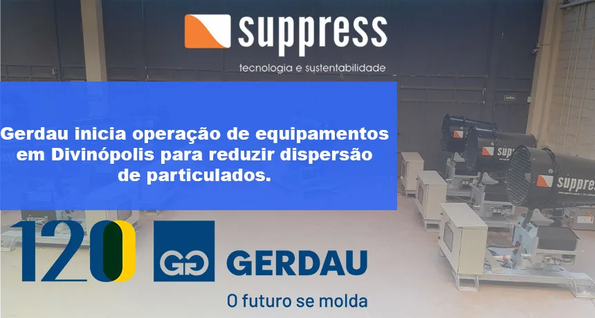

Gerdau Inicia Operação de Equipamentos em Divinópolis para Reduzir Dispersão de Particulados
Investimento de R$ 2,5 milhões em aspersores reforça o compromisso ambiental da siderúrgica em sua unidade mineira.

A Gerdau colocou em operação sete aspersores dedicados a minimizar a dispersão de particulados em sua unidade produtora de aço em Divinópolis, Minas Gerais. A aquisição dos equipamentos representou um investimento superior a R$ 2,5 milhões e faz parte de uma série de iniciativas ambientais anunciadas recentemente pela empresa na unidade.
A unidade de Divinópolis é uma das mais antigas e tradicionais da Gerdau no estado, e também uma das que mais convivem com o desafio da interface entre operação industrial e perímetro urbano. A cidade cresceu ao redor da usina ao longo das décadas, o que torna o controle de emissões uma questão de relacionamento direto com moradores, além de uma exigência regulatória dos órgãos ambientais estaduais.
Equipamentos mais modernos e eficientes
As novas máquinas são resultado de um conjunto de investimentos da Gerdau em soluções para o controle da poeira gerada pela movimentação de matéria-prima, um dos pontos críticos em operações siderúrgicas, onde o manuseio constante de minério de ferro, carvão e demais insumos gera grande volume de material particulado em suspensão.
O número de sete unidades instaladas sugere uma estratégia de cobertura por pontos: cada aspersor posicionado em um ponto específico de geração intensa, como frentes de descarregamento de caminhões, áreas de transbordo de correias ou entradas de pátio. Essa abordagem é eficaz quando os pontos críticos são bem mapeados e não sofrem grandes variações ao longo do tempo, permitindo que equipamentos fixos cubram de forma consistente as zonas de maior risco de emissão. Para cenários em que a geração de poeira migra conforme a operação avança, como em pilhas de grande extensão ou em frentes de operação variáveis —, equipamentos com maior alcance e mobilidade, como os canhões de névoa, podem complementar o trabalho dos aspersores fixos.
Por que a siderurgia é especialmente sensível ao controle de particulado
Usinas siderúrgicas concentram diversas fontes de geração de poeira em um único complexo industrial: o descarregamento de matéria-prima em pátios, o transporte por correias, o processamento em altos-fornos e a movimentação constante de caminhões em vias internas não pavimentadas. Diferente de operações de mineração a céu aberto, muitas usinas estão localizadas próximas a perímetros urbanos, o que torna a dispersão de particulado um fator de relacionamento direto com a comunidade vizinha, além de uma questão regulatória.
O particulado gerado em operações siderúrgicas tem características distintas das poeiras de mineração a céu aberto: inclui partículas de óxidos metálicos, especialmente de ferro, que podem apresentar características específicas de granulometria e densidade, influenciando como elas se comportam em suspensão no ar. Em termos de saúde ocupacional, os trabalhadores expostos a essas emissões ao longo de anos têm riscos específicos que vão além das pneumoconioses tradicionais. A regulamentação da NR-09 exige o mapeamento e monitoramento desses riscos químicos e físicos no ambiente de trabalho, e o controle de particulado é uma das medidas de engenharia previstas pela norma para redução na fonte. O artigo sobre poeira no ambiente de trabalho detalha as obrigações do empregador nesse contexto.
Como funcionam os aspersores
Os aspersores criam uma névoa d'água e foram estrategicamente posicionados no pátio onde há maior fluxo de caminhões e manuseio de matérias-primas. Eles atuam como grandes pulverizadores, umedecendo as partículas de poeira para que não subam para a atmosfera e afetem o entorno da operação, uma medida especialmente importante durante os períodos mais secos do ano, quando o risco de dispersão de particulado é maior.
O posicionamento estratégico dos equipamentos é um trabalho de engenharia que vai além da simples colocação nos pontos mais óbvios de geração. É preciso considerar a direção predominante dos ventos na localidade, para que a névoa se expanda em direção ao particulado e não ao contrário —, a altura de instalação, o padrão de oscilação e a granulometria das gotículas em relação ao tipo de pó gerado. Um aspersor bem especificado e mal posicionado pode consumir água sem entregar o resultado esperado de supressão. Por isso, projetos como o da Gerdau em Divinópolis contam com apoio técnico especializado desde a fase de levantamento de campo.
"Os aspersores criam uma névoa d'água e foram estrategicamente posicionados no pátio onde há mais fluxo de caminhões e manuseio de matérias-primas, como minério de ferro e carvão. Eles funcionam como grandes pulverizadores de água que ajudam a umedecer as partículas de poeira para que elas não subam para a atmosfera e afetem o entorno, uma medida importante principalmente nesse período mais seco do ano.", Mauro Castro, gerente executivo da usina
Aspersores e canhões de névoa: tecnologias complementares
Embora aspersores e canhões de névoa compartilhem o mesmo princípio básico, pulverizar água para capturar particulado em suspensão —, eles atendem a necessidades operacionais diferentes. Aspersores fixos, como os instalados pela Gerdau, são adequados para cobrir pontos específicos de geração intensa, como áreas de descarregamento. Já equipamentos de maior alcance e vazão, como os canhões de névoa, são indicados quando é preciso cobrir áreas mais extensas, pilhas de estocagem completas, por exemplo, a partir de um único ponto de instalação, com oscilação automática que amplia a área de cobertura. O artigo sobre canhão de névoa x aspersores detalha as diferenças técnicas entre as duas tecnologias e ajuda a entender qual delas é mais adequada para cada cenário operacional.
Um movimento do setor siderúrgico
O investimento da Gerdau em Divinópolis reflete uma tendência mais ampla do setor siderúrgico brasileiro: a adoção de tecnologias de controle de particulado como parte da estratégia ambiental e de relacionamento com as comunidades vizinhas às operações. Equipamentos como aspersores e canhões de névoa têm se tornado padrão em pátios de estocagem, áreas de carregamento e demais pontos críticos de geração de poeira. Esse movimento é semelhante ao observado em outras grandes operações industriais, como relatado no artigo sobre o combate a particulados na Usiminas.
Iniciativas como essa demonstram que o controle de emissões de particulado deixou de ser apenas uma obrigação regulatória para se tornar parte da estratégia de sustentabilidade e responsabilidade ambiental das grandes siderúrgicas do país. Para operações que buscam avaliar qual configuração de equipamento melhor se adapta ao seu pátio, a Suppress oferece uma linha completa que vai de modelos compactos ao SP-65, de alto porte, indicado para pátios com maior volume de movimentação, veja a linha completa na página de produtos.
O exemplo da Gerdau em Divinópolis é também um sinal de que o mercado siderúrgico está amadurecendo na abordagem ao controle de particulado: sair do modelo reativo, instalar equipamentos depois de uma autuação ou de uma reclamação comunitária, para um modelo proativo, em que o controle ambiental é planejado como parte integrante do projeto operacional. Essa mudança de postura tem impacto direto nos custos de longo prazo: equipamentos bem dimensionados e instalados preventivamente custam menos do que soluções emergenciais implementadas sob pressão regulatória, além de gerar melhores resultados de qualidade do ar. Para entender os custos financeiros reais da poeira não controlada, o artigo sobre o custo da poeira para a empresa traz uma análise detalhada dessas frentes de impacto.
Perguntas Frequentes
Quanto a Gerdau investiu nos aspersores da unidade de Divinópolis?
O investimento na aquisição dos sete aspersores superou R$ 2,5 milhões, fazendo parte de uma série de iniciativas ambientais da empresa para reduzir a dispersão de particulados na unidade mineira.
Qual a diferença entre aspersores e canhões de névoa?
Aspersores fixos são indicados para cobrir pontos específicos de geração intensa de poeira, enquanto canhões de névoa, com maior alcance e oscilação automática, conseguem cobrir áreas mais extensas a partir de um único ponto de instalação.
Por que siderúrgicas investem em controle de particulado?
Além da exigência regulatória, o controle de particulado é importante para a relação com comunidades vizinhas às operações, já que muitas usinas siderúrgicas estão localizadas próximas a perímetros urbanos e a dispersão de poeira é um fator sensível de relacionamento social.
Quer controlar a dispersão de particulado na sua operação?
Fale com nossos engenheiros e descubra a solução ideal para reduzir a poeira no seu pátio industrial.
Solicitar Proposta